Furnace and Fugue. A multimedia edition of Michael Maier’s Atalanta fugiens
Table of Contents
Abstract
Furnace and Fugue is a digital edition of Michael Maier’s (1568-1622) opus magnum, the emblem book Atalanta fugiens (1617/18) in which Latin and German texts are paired with images and musical fugues in an enigmatic way to engage users of the book in deep meditation on alchemical subjects. The digital edition of the text itself, including an English translation based on a 17th century manuscript, is accompanied by a number of scholarly essays. A main feature is the MEI player, which includes a piano roll visualisation that allows users to experience the musicological makeup of Atalanta fugiens even without a background in music theory. The edition is a beautifully designed “haute couture” edition, intended to provide an example for the future of digital scholarly publishing. The project has used digital editing effectively to enable the multimedia experience that Michael Maier had likely envisioned for Atalanta fugiens. but which was previously inaccessible to most users of the book.
Introduction
Furnace and Fugue is a digital edition of the multimedia emblem book Atalanta fugiens (1618a), authored by alchemist Michael Maier (1569-1622). In addition to customary text, this alchemical emblem book also contains a fugue to accompany each image. The narrative frame for the collection of fifty emblems is the ancient myth of Atalanta and Hippomenes’ race (Wels 2010, 150). Early modern emblematics tend to be meant as food for thought, whereby readers (or maybe rather, users) of the emblem book meditate upon the often obscure symbolism to get a moral message. Maier’s Atalanta fugiens is innovative in its adaptation of emblematics for alchemy and in its addition of a third layer (music) to the already multi-medial emblematics (consisting of text and image). Since both alchemy and emblematics on their own have a reputation of being somewhat hard to unriddle, the combination thereof supplies as an ideal source for a digital edition, offering lots of opportunities for including additional information, data enrichment, or other explanatory resources. More information about Atalanta fugiens can be found in Furnace and Fugue as well as all the other many publications on Atalanta fugiens and thus, shall not be repeated here in detail.1 This review2 will discuss Furnace and Fugue in the context of digital scholarly editing, describe the project website and its features as well as provide a short review of the scholarly essays included in the digital publication.
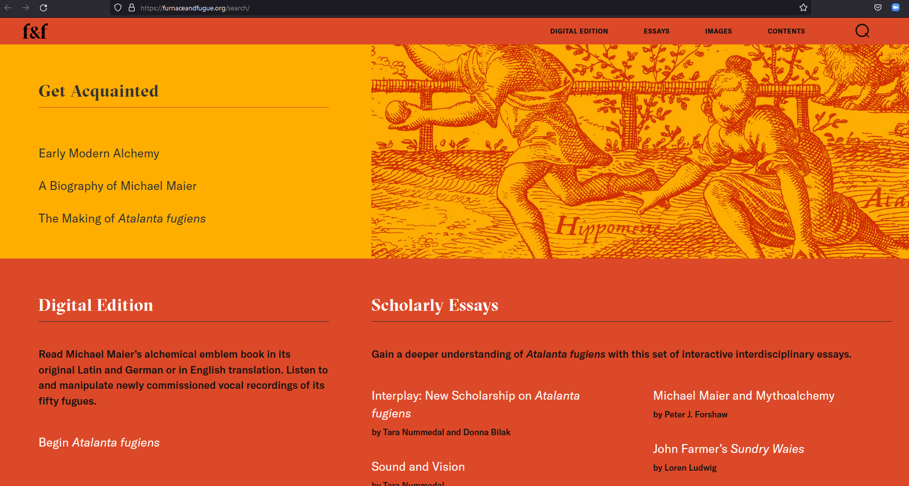 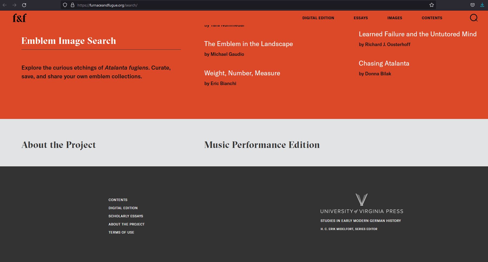
Furnace and Fugue originated in co-editor Donna Bilak’s postdoctoral research at the Chemical Heritage Foundation (now Science History Institute, Philadelphia/PA) in 2013-2014, where it was further developed in a 2015 workshop and at a later 2016 Brown University workshop.5 The project was finally launched in 2020 in a YouTube event.6 Besides the two co-editors, Tara Nummedal and Donna Bilak, a large team contributed to Furnace and Fugue over the years.7 As part of the project, a Furnace and Fugue Instagram account (@furnaceandfugue) was set up which hosted a series of posts for the 400th anniversary of Atalanta fugiens where different people (scholars and lay people alike) were invited to express their thoughts about one of the emblem images each.8 The project was awarded the Roy Rosenzweig Prize for Creativity in Digital History, the funds of which are intended for the creation of a pedagogical companion website to promote public engagement with the digital edition.9 Furnace and Fugue was published by the University of Virginia Press (in the series Studies in Early Modern German History, edited by Erik Midelfort) as a born-digital publication.
Atalanta Fugiens, 1617/18
Michael Maier (1568-1622) was a German iatrochymist (‘alchemist and doctor’) recognized for a number of alchemical publications in the early 17th century. Among his works, the alchemical emblem book Atalanta fugiens (1618a) stands out, as it is described as “one of the most beautiful books of alchemical literature of all time” (Figala and Neumann 1989, 49-50). Since the seminal 1969 study by Helena M. E. De Jong, Atalanta fugiens is considered the masterpiece of Maier’s oeuvre, probably because of its unusual multimedia combination of text, image, and music (Leibenguth 2002, 5-6).10
Despite the fact that the whole range of possible interpretations of Maier’s multimedia masterpiece will probably never run out,11 there is consensus that Maier intended to promote alchemy in the context of courtly education and entertainment, for which emblems surely were an ideal medium.12 In their introduction to Furnace and Fugue, Nummedal and Bilak state:
Maier [...] sought to elevate alchemy above its grubby artisanal roots, establishing it as a humanist, philosophical, emblematic, courtly art with the potential to access nature’s arcana. On this count Atalanta fugiens certainly succeeds, demonstrating that alchemy offered not just precious medicines or metals but also fodder for mathematical games, musical riddles, artistic virtuosity, and classical erudition. (Nummedal and Bilak 2020b)
Some have even interpreted Maier’s Atalanta fugiens as a turn away from alchemical practice to the use of alchemical symbolism for poetic ends, merely repurposing existing material from earlier alchemical compendia as his poetic material (Wels 2010, 2013). While claims have been made that Atalanta fugiens lacks practical chemistry, no detailed explanations are provided to support these assertions.13 In fact, Rainer Werthmann has offered chemical explanations for several emblems within the book.14 Lawrence Principe characterises the work as follows:
It can thus be seen as part of the wider tradition of apologies of alchemy in which Maier uses the poetry, music, learned play, and beautiful images of his book to link chymistry to the liberal and the fine arts. His purpose, then, is not simply to entertain readers but rather to ennoble a practice generally considered dirty and laborious by making it attractive to humanist contemporaries. [...] Atalanta fugiens is one instance of continuing attempts to address chymistry’s shaky cultural and intellectual position – an issue that plagued chymists from the Middle Ages through the eighteenth century. (Principe 2013, 176-78)15
Undoubtedly, Atalanta fugiens stands as Maier’s most extensively researched work, attracting numerous re-editions and articles written about it.16 While some of these publications primarily admire the uniqueness and peculiarity of Maier’s emblems without adding new insights, others provide valuable contributions to emblem studies (Rola 1988; Gaudio 2020; Wagner 2021). Furthermore, a number of publications revolving around the topic of ‘alchemy and music’ exist, most of which at least mention Maier’s Atalanta fugiens.17 Furnace and Fugue could build on the source critical work of De Jong, her English translation and contextual information as well as the Hofmeier edition with its abundant indices (Jong 2002; Hofmeier 2007; rez. Smith 2009; Tilton 2011). Beyond its multimedia aspects, Atalanta fugiens’ enduring popularity was probably the primary motivation for creating an edition of this book of Maier’s rather than another. And, as the various contributions in Furnace and Fugue testify, there is still much left to be said about it.18
Digital edition overview
With its gorgeous design, Furnace and Fugue 19 exemplifies what Elena Pierazzo refers to as an ‘haute couture’ digital edition (Pierazzo 2019), a term to describe editions “which are tailored to the specific needs of specific scholars” (Pierazzo 2019, 209) using significant amounts of funding. The editors assert in their introduction that Atalanta fugiens had never before been discussed in such a multidisciplinary manner (Nummedal and Bilak 2020b). Furnace and Fugue allows modern audiences, perhaps for the first time, to experience Atalanta fugiens in the way it may have been intended by the author. The editors state that De Jong’s fundamental 1969 study, which focused on source criticism, deflected attention from the unique multimedia combination that is Atalanta fugiens, reducing it to a traditionally text-centered approach. Furnace and Fugue aims fill this gap and explore neglected aspects, such as the relationships between images, texts, and music, in an interdisciplinary context (). Additionally, the edition seeks to bridge the gap in knowledge between Maier’s intended audience, erudite Humanistic polymaths, and modern users. Furnace and Fugue makes Michael Maier’s unique multimedia emblem book more accessible in multiple ways: On the one hand, the scholarly articles addressing open questions of Maier research make this edition relevant for a scholarly audience (Bianchi 2020; Bilak 2020; Forshaw 2020; Gaudio 2020; Ludwig 2020; Nummedal and Bilak 2020b; Nummedal 2020; Oosterhoff 2020). On the other hand, three introductory essays on alchemy, Maier, and letter-press printing provide just enough background to let an interested public partake in the exploration of this unique remnant of early modern culture (Rampling 2020; Tilton 2020; Tabor 2020).
In the following, we will proceed to explore the project website in the order of the different options in the navigation bar (‘Digital Edition’, ‘Essays’, ‘Images’, and ‘Contents’). Clicking on ‘Digital Edition’20 leads the user to a list of images, from which they can select an emblem to start with. Within the emblem overview, there is a ‘DOI’ button that copies the DOI (https://doi.org/10.26300/bdp.ff.maier) to the user’s clipboard.
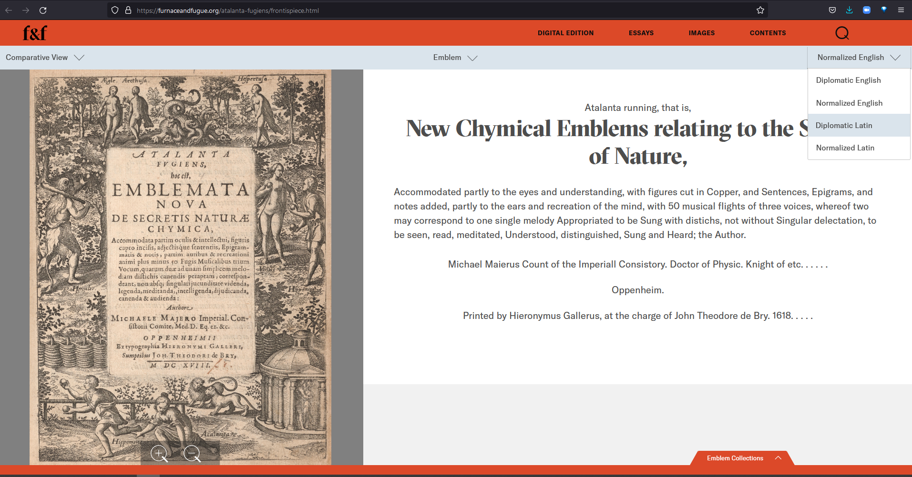
Emblem/Edition view
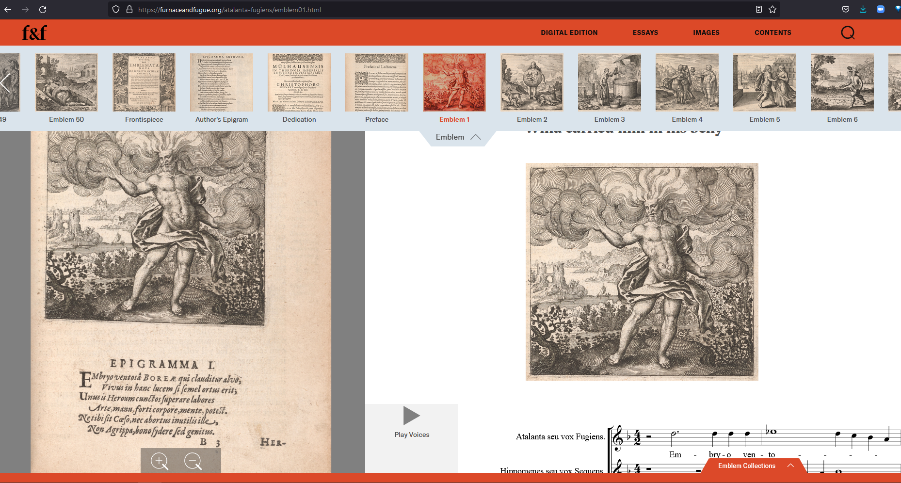
Personalised image collections
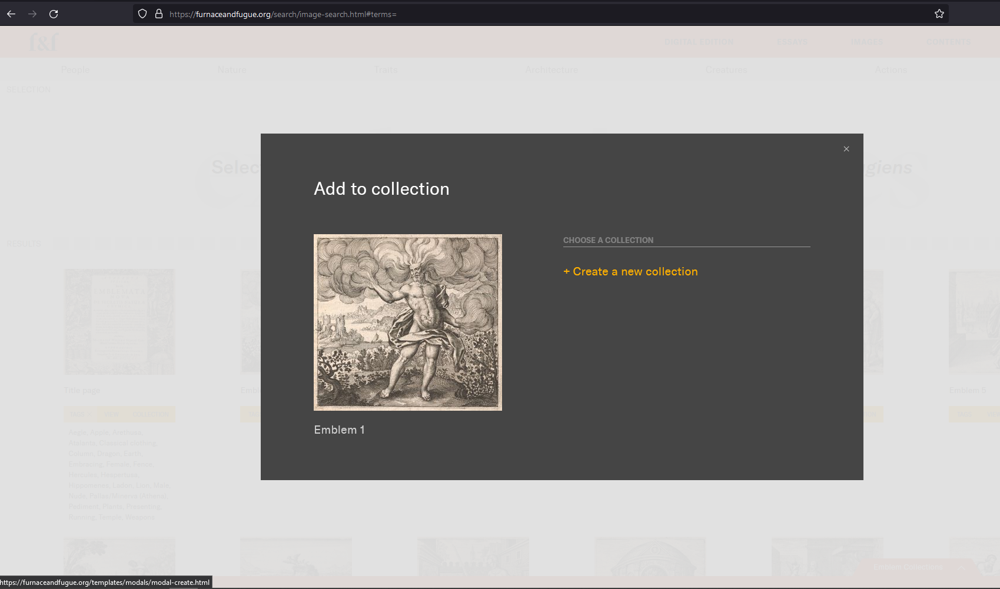 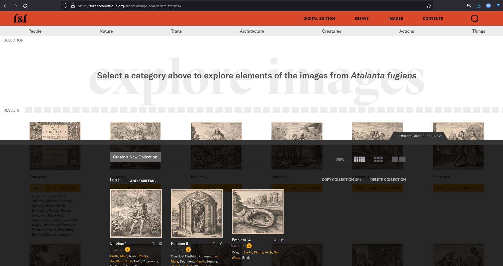
MEI viewer/player and piano roll visualisation
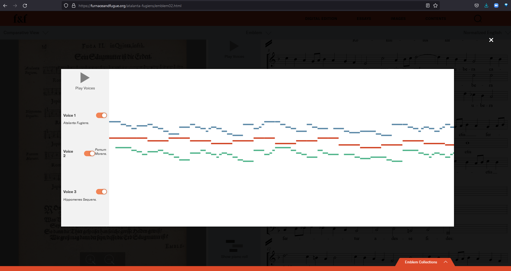 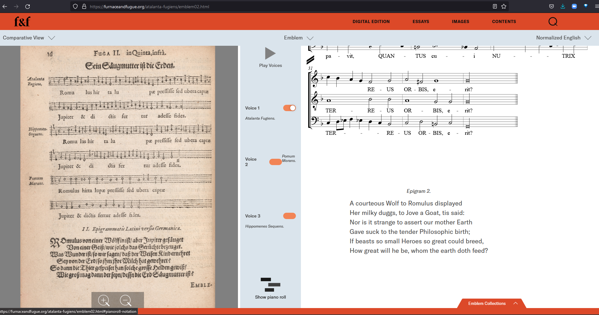
The music notation was transcribed using the Sibelius software and converted to MEI using the Sibelius-to-MEI plugin. Subsequently, the resulting MEI/XML required adjustments for timing extraction using XSLT, which generated a table of MEI elements and their respective timings using the Verovio JSNode script. This step was necessary due to the inherent imprecision in human musicians’ performances compared to the exactness of the music notation in MEI/XML. To achieve smooth synchronisation between a viewer and a recording of human voices based on ideal durations from the sheet music, data had to be adapted to account for these discrepancies. Common Music Notation (CMN), an open-source format for hierarchically describing and rendering musical scores as images, was also created using Verovio on the command line. The Common Music Notation in SVG and the MEI table with timings were then assembled and inserted into the HTML template. Thus, “the project modernised the polyphonic fugues into animated notation that is playable in a web browser” (Rashleigh and Brusch 2020).
Image view
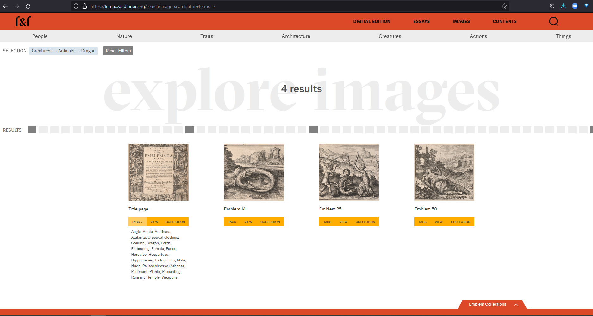 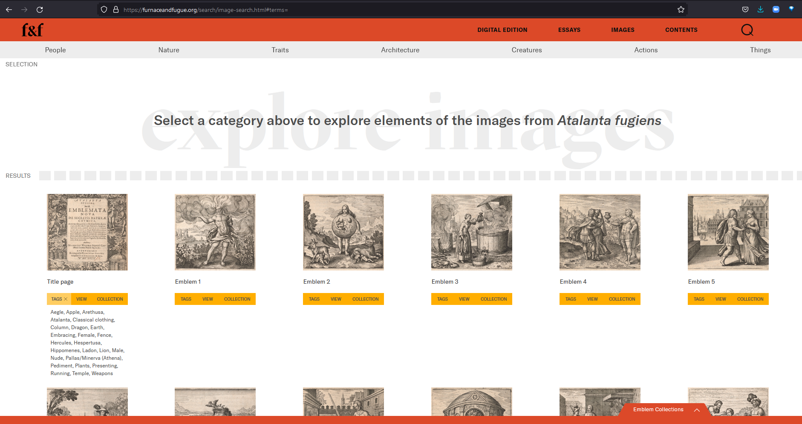
Each category provides corresponding options for selecting emblems. Once the search results are displayed, users can choose to display the emblem tags or to jump to the emblem view.26 Additionally, there is a shortcut to add emblems to personal collections. Notably, the emblems of Furnace and Fugue do not seem to be included in existing emblem repositories or research engines such as Emblematica Online. Integrating them into such a resource would allow for a broader comparison of motives beyond Atalanta fugiens. In a project by the Herzog August Bibliothek Wolfenbüttel, IconClass tags were created specifically for alchemy (IconClass 49E39) which could have been reused here to enhance interoperability between alchemy projects.27
The text
Furnace and Fugue includes a transcription of a 1618 edition of Atalanta fugiens as well as an anonymous 17th century English translation (Mellon MS 48, which will be discussed later).28 The TEI files contain detailed metadata, transcriptions, and the markup of personal names but no editorial interventions in the stricter sense.
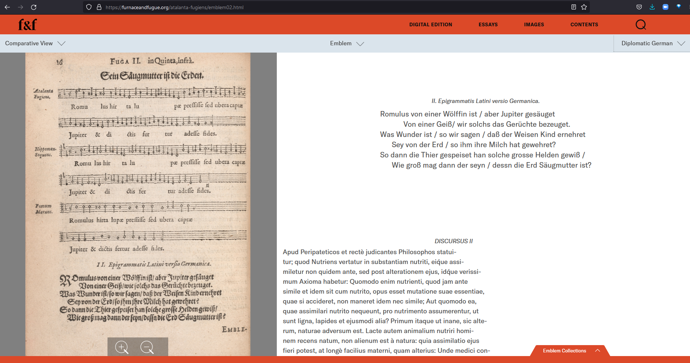
Thanks to the availability of normalised Latin, which can be
generated from the TEI/XML downloadable via GitHub, one can easily feed the text
into Natural Language Processing Pipelines, thereby offering data that can be
reused in future Digital Humanities research. Named entities are marked up in the
TEI data as well as in the image search JSON, which powers the semantic search.
However, many entities (such as <persName>) marked up in the
detailed TEI encoding, which also references the images, are not accessible to
users within the edition itself. The TEI files are of high quality and could be
reused in future projects to create a critical edition with word-level
commentary.
The historical translation provided in Furnace and Fugue
Due to its beautiful design, accessibility, and the lasting pop-cultural fascination of Atalanta fugiens, Furnace and Fugue is likely to attract a non-scholarly audience, who may not be aware of the potential pitfalls of re-using historical translations uncritically. The way the anonymous 17th century English translation from Mellon MS 48 is presented at this time, the historical translation is mostly in disguise: users need to actively look for information on the provenance of the translation in order to learn more about it. Most non-scholarly users of the edition are unlikely to undertake this investigation. The fact that the translation is a historical text of its own, requiring contextualisation, may even escape audiences who are theoretically aware of these issues because it is disguised behind the normalised reading version which appears as a default.
Early modern translations are liberal renderings rather than trustworthy translations in our sense of the word. Translators are known to alter meanings or details to accommodate their own interpretation of the source text or alchemical theory – as Maier himself has done in his own vernacular-to-Latin translation of Basil Valentine’s Twelve Keys (Maier 1618b; Principe 2013, 153). Translations can be influenced not only by the limitations of expressing certain concepts in exactly the same way in multiple languages, but they can also be heavily influenced by the authors’ own views, their time, cultural contexts, and their own interpretations of the subject matter. Moreover, when historical translations are used without extensive editing or commentary, readers who are not well-versed in the target languages may overlook deficiencies in the translation. This is apparent, for instance, in a 17th century English translation of Michael Maier’s Viatorium (1618), where the translator evidently glossed over portions they did not fully comprehend, without acknowledging their likely uncertainty regarding the translation’s accuracy (McLean 2005). It is plausible that such a translation represents an initial or rough draft, where the translator did not invest significant time, effort, or care. Assessing the quality of such a translation in detail is challenging without conducting a word-by-word translation oneself. While a vague translation can offer readers an overview of the content of a Latin work, it is important to recognise that it is likely to contain errors or inaccuracies in the finer details. Many times, such historical translations, instead of making the meaning easier to grasp for a modern reader, obscure it even more, introducing additional room for misunderstandings of the message intended by the original author. Even if the translation of Atalanta fugiens used in Furnace and Fugue were substantially better than the aforementioned example, it would still not be an ideal choice from a scholarly standpoint and one would expect more critical engagement with this fact. In a field like the historiography of alchemy, where details can be crucial, the use of a potentially flawed 17th century translation is debatable to say the least, particularly if it is not clearly declared as such.30
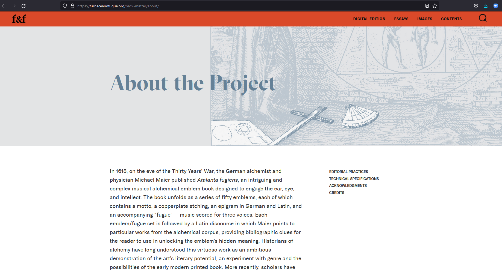 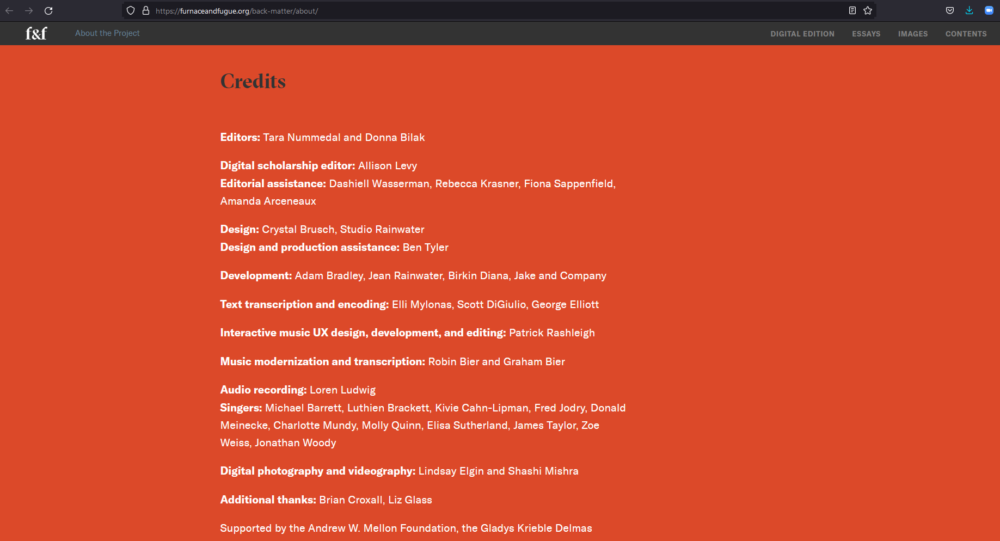
To address this issue, an easy-to-find, clearly visible note should
be added to highlight the frequent unreliability of historical translations and
the reasons why they have to be used with caution. The lack of a critical edition
and the debatable use of a historical translation were also remarked upon in the
much shorter format of Reviews in DH (Bielak 2021).32
As it stands, the translation might lead some to assume incorrectly that this
translation was produced throughout the Furnace and Fugue project
according to modern translation standards. The authors could have opted to present
the diplomatic translation as a default, as its wording immediately denotes it as
a historical document. A button to
‘Switch to reading version’ would make it
even more obvious. Alternatively, an information box could provide this vital
context and explain the implications for the translation’s accuracy and
trustworthiness. A suggested citation could highlight the translation’s
provenance from a historical source. None of these issues is a dealbreaker and
they can be addressed through minor adjustments to the edition. I propose
providing a more detailed explanation of the historical translation in the edition
guidelines found in the back matter or about page, accompanied by a prominently
displayed popup button or similar element near the text itself in the emblem
view.
Scholarly essays
Three introductory essays (Rampling 2020; Tilton 2020; Tabor 2020) make Furnace and Fugue a very well-rounded resource for audiences unfamiliar with the historical context of Atalanta fugiens. The scholarly essays that represent the scholarly engagement with Atalanta fugiens within Furnace and Fugue will be discussed in the following paragraphs (Bianchi 2020; Bilak 2020; Forshaw 2020; Gaudio 2020; Ludwig 2020; Nummedal and Bilak 2020b; Nummedal 2020; Oosterhoff 2020).
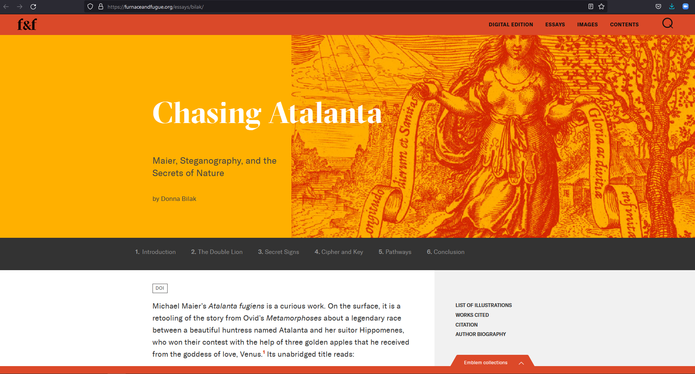 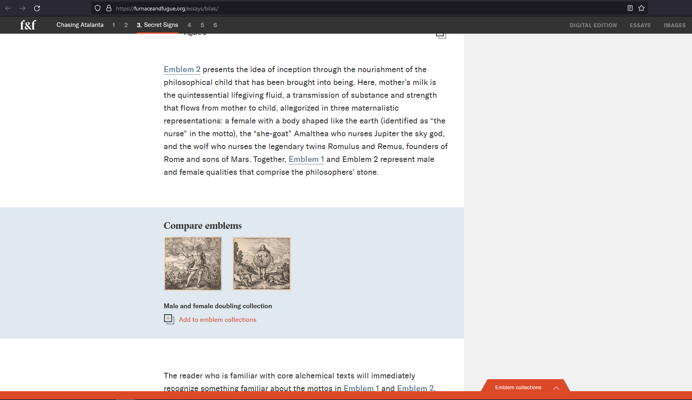 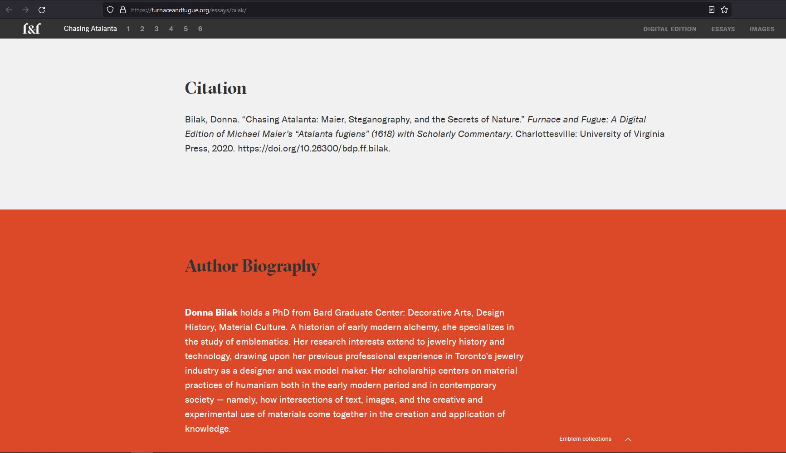 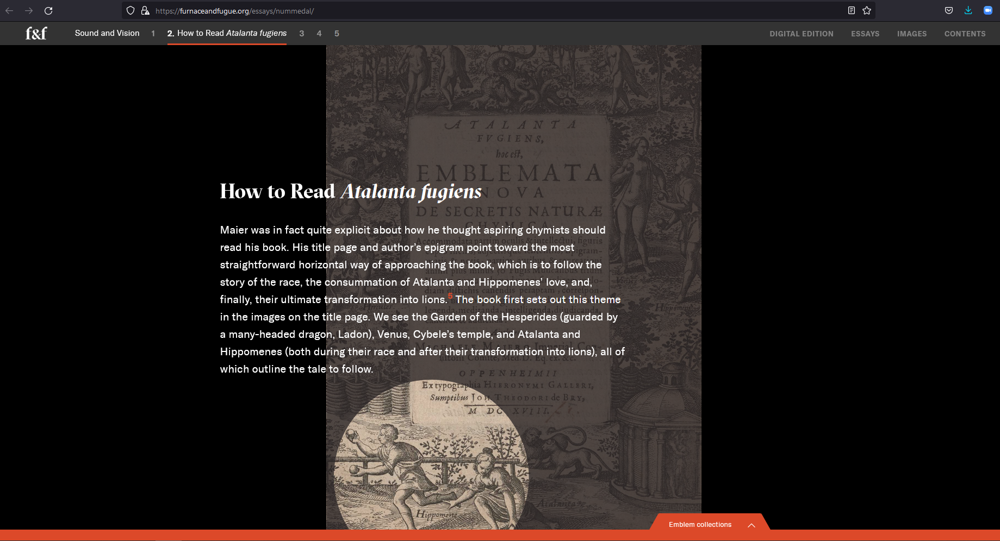 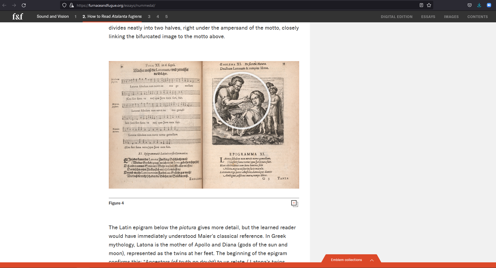
Richard Oosterhoff discusses allusions to mathematics such as the squaring of the circle in Maier’s earlier tract De Circulo Physico Quadrato (1616), explaining it as a problem that cannot be solved by theory alone, but only by a practitioner able to combine ‘ratio’ and ‘experientia’, highlighting the importance of practical expertise alongside theory. Craftsmen are, as Maier suggests, ‘squaring circles’ all the time in their everyday practice by approximation while the problem remains unsolvable to theorists. Maier likely means to insinuate that the same is true for gold-making, framing it as a solution that is theoretically knowable, just not yet known, exactly like Aristotle had framed the squaring of the circle (Oosterhoff 2020). Peter Forshaw discusses Maier’s mythoalchemy, comparing his mythoalchemical text Arcana Arcanissima (1614) with the mythoalchemical emblems of Atalanta fugiens (Forshaw 2020).
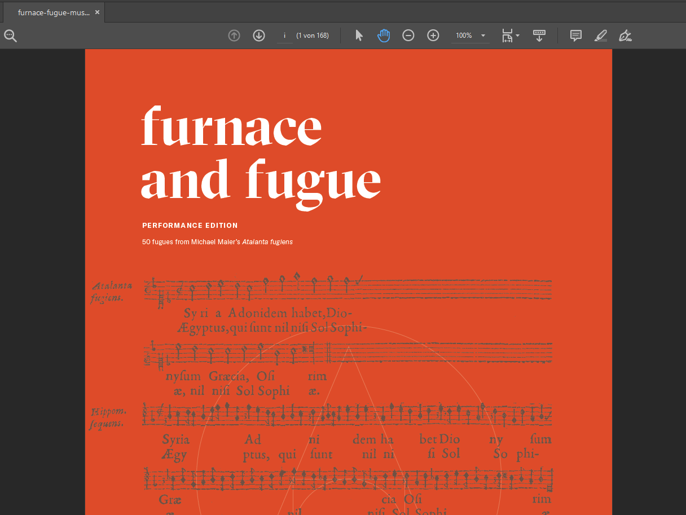
While these contributions significantly enhance current research, particularly the insights regarding Maier’s fugues, central questions concerning Atalanta fugiens remain unanswered to this day, such as the absence of a critical edition or a chemical commentary.34 Although the project’s title does not explicitly promise a critical edition, the phrase “digital edition with scholarly commentary” (Nummedal and Bilak 2020b) may lead readers to expect an apparatus-style commentary rather than scholarly essays.
Footnotes in the scholarly essays
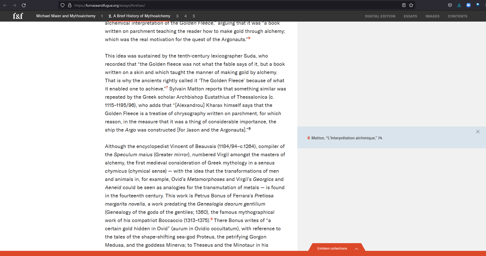
Usability and design decisions significantly impact how users engage with resources by providing certain affordances (Norman 2013). A digital scholarly edition should allow for the critical examination of sources, both primary sources and those referenced in scholarly articles. Making it difficult or cumbersome to open up all the footnotes, requiring individual clicks on each footnote, creates a user experience that discourages active engagement with footnotes. A scholarly edition should never discourage critical and scholarly engagement with the sources represented in it, no matter the gain in usability or the improvement in design or beauty.
To address this issue, I recommend supplying a ‘display all footnotes’ button or providing a PDF version of the articles that includes all footnotes.
Contents and search bar
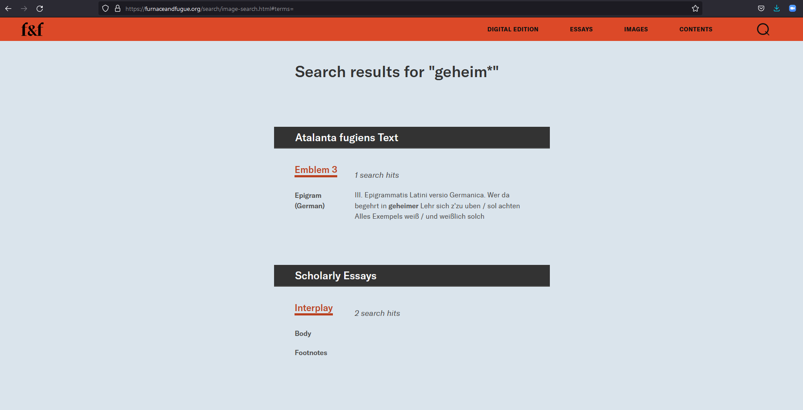
Backmatter/about
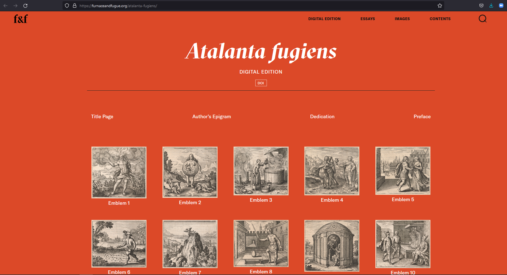
Technical implementation
The backmatter/about site does not address the project’s digital sustainability. The majority of the content focuses on editorial guidelines and acknowledgments. The XML source data and code for the website creation are provided through a GitHub repository, allowing for data reuse. However, this approach may pose a risk to long-term archiving and sustainability, as relying on a proprietary platform like GitHub could result in potential data loss or discontinuation of services. It would be preferable for a non-commercial institution to ensure the long-term sustainability of the data.36 In total, there are four GitHub repositories containing all project data and code, with the ‘atalanta-media’ repository appearing as the most suitable point of access.37 Notably, there are no GitHub releases or data publications on Zenodo archiving parts of the edition.
In terms of technical implementation, Furnace and Fugue employs a custom static site generator, presumably developed as part of a broader digital publishing initiative at Brown University. However, the rationale for not utilising existing tools for this purpose is not provided. While the use of plugins and JavaScript libraries (e.g., Waypoints, GreenSock Animation API (GSAP), GSAP ScrollToPlugin, Tumult Hype Pro, ScrollMagic) enhances the user experience, there is no explicit consideration of the project’s long-term sustainability. This concern extends to archiving and publishing data on GitHub, which may be subject to disappearance, as well as the JavaScript libraries that tend to become outdated relatively quickly. The aforementioned information represents the extent of the documentation regarding technical implementation, with more detailed information promised on the ‘atalanta-code’ GitHub repository, which, upon inspection, does not seem to contain such documentation.
Data provided on the ‘atalanta-media’ GitHub are: TEI/XML for
Atalanta fugiens, 1618 (in Latin and German), TEI/XML for
Atalanta running, that is, new chymicall emblems relating to the secrets
of nature (English), MEI/XML for the 50 fugues, WAV audio files for the
50 fugues in three voices, JSON image search terms for the 50 emblem images and
frontispiece as well as JP2 image files for Atalanta fugiens, 1618
which link to the Brown Digital Repository (Olio).38 Everything except the JP2 images is hosted on GitHub repositories, i.e. a
version control system for working code, not digital repositories meant for
long-term archiving.39
The TEI files are available from the project’s GitHub repository and include
detailed <teiHeader> metadata as well as, for example, the
markup of personal names using <persName>.40
With the last GitHub edits in 2020, the project seems no longer to be under
development. It is unclear whether the project will be actively maintained and who
is the responsible party, if any, and the manner in which it will be done remains
unclear, although it could be presumed that the Brown Digital Publishing
Initiative may assume responsibility.
Furnace and Fugue and digital editing practices
Part of the Brown Digital Publishing Initiative, Furnace and Fugue serves as a commentary on generating reputation, trustworthiness, and credibility in digital publishing, particularly within the context of digital scholarly editions. It combines practices from both digital scholarly editions and digital scholarly publications, positioning itself as a first-born digital monograph that includes a text edition but differs from other digital scholarly editions in significant ways. To understand Furnace and Fugue and its place within the Digital Humanities and digital scholarly editing community, it is essential to consider its context in the Mellon Digital Publishing Initiative grant. This initiative aims to develop new models for digital publications, primarily focused on making traditional scholarly peer-reviewed publications accessible as digital open-access editions while maintaining credibility within the traditional framework of tenure requirements. It does not directly derive from the Digital Humanities tradition of digital scholarly editing like it is usually reflected upon in reviews in this journal. This important information for understanding the institutional context of Furnace and Fugue can only be gleaned by listening to a number of podcasts, interviews, and online talks given by the editors and collaborators of the Furnace and Fugue project (New Books Network 2020; Cocks 2021). It might make sense to include a brief note on this in the ‘Backmatter’ of the digital edition, alongside other project information.
Through these circumstances, Furnace and Fugue serves as an
intriguing commentary on digital editions. On one hand, the project seeks to promote
digital open-access publishing and align such publications with traditional academic
expectations by partnering with a reputable publisher, the University of Virginia
Press. This approach prioritises ‘extrinsic’
means of garnering reputation rather
than fully utilising quality standards of the digital scholarly editing community,
i.e., quality standards for digital editing as discussed frequently in this journal
but that Furnace and Fugue does not make full use of (such as opting for
the IconClass tagging system instead of a custom one to enhance interoperability or
providing a critical edition of the text represented in the edition).41
However, the self-fashioning of the project as a digital publishing pioneer may be explained by the unmentioned focus on creating a digital publication, that is a digitally-enhanced, peer-reviewed, open-access edited collection rather than a digital scholarly edition of Atalanta fugiens itself. While these decisions are valid, they could have been explicitly stated in the project description. Given the project’s aim to develop high-quality digital publications deserving the same respect as print equivalents, it still seems a bit unusual that more interest was not extended to the digital scholarly edition of Atalanta fugiens. The methodology of scholarly editing, digital or otherwise, has long been accepted as a means of ensuring quality and reputation for text editions. The title of the digital publication “a Digital Edition [...] with Scholarly Commentary” (Nummedal and Bilak 2020b), though probably carefully chosen, may be considered somewhat misleading since scholars trained in text editing or textual philology would expect that commentary to relate directly to the text. According to a more traditional definition of a scholarly commentary, the articles provide inter- and multidisciplinary interpretations of Atalanta fugiens, not a commentary of the text itself. The title of the introduction, “Interplay. New Scholarship on Atalanta fugiens” (), confirms just that suspicion – that Furnace and Fugue is not primarily a digital scholarly edition of Atalanta fugiens but rather, provides new scholarship on Atalanta fugiens while at the same time making the text and facsimiles easily accessible online.
Furnace and Fugue as a digital edition
The editors emphasise the fact that Furnace and Fugue is the first truly interdisciplinary resource on Atalanta fugiens, yet, its unique contribution pertains mainly to the area of musicology. This is reflected both in the edition of the source text itself, featuring an innovative MEI Viewer/Player, which allows even a lay audience to playfully explore the musical composition, and in the scholarly essays, which contribute consequential new insights mostly with regard to Maier’s fugues. While the other essays explore interesting aspects, they do not fundamentally change our understanding of Atalanta fugiens but rather expand on existing discussions. The team was certainly interdisciplinary, yet as to the pertinent question of why there was not a historian of chemistry involved, the project website remains silent.42
Despite its other merits, which are plentiful, Furnace and Fugue could have done a better job of being more critical of its sources (the 17th century translation) and tailoring the resource for the needs of a scholarly audience (making footnotes more easily accessible in the scholarly essays). It is suggested that a note regarding the translation as well as a ‘show all footnotes’ button should be added to remedy these issues. As a third main issue, the long-term archiving situation is not clear and there is no statement on the data management plan.
While Furnace and Fugue excels in visual presentation and interactive aspects, it falls short in textual criticism as it lacks a critical edition. While it is understandable that Furnace and Fugue opted to focus on aspects previous editions had paid less attention to (images and music), the text is still one of the three core elements of Maier’s multimedia work (text, image, music). Despite the significant scholarly interest in Atalanta fugiens, the text itself remains incompletely understood, lacking a commentary or comprehensive textual analysis. The absence of a critical edition or deeper engagement with the text is regrettable and leaves a sense of incompleteness. However, this was a deliberate decision by the editors, who have successfully achieved the goals they set for this digital edition of Atalanta fugiens.
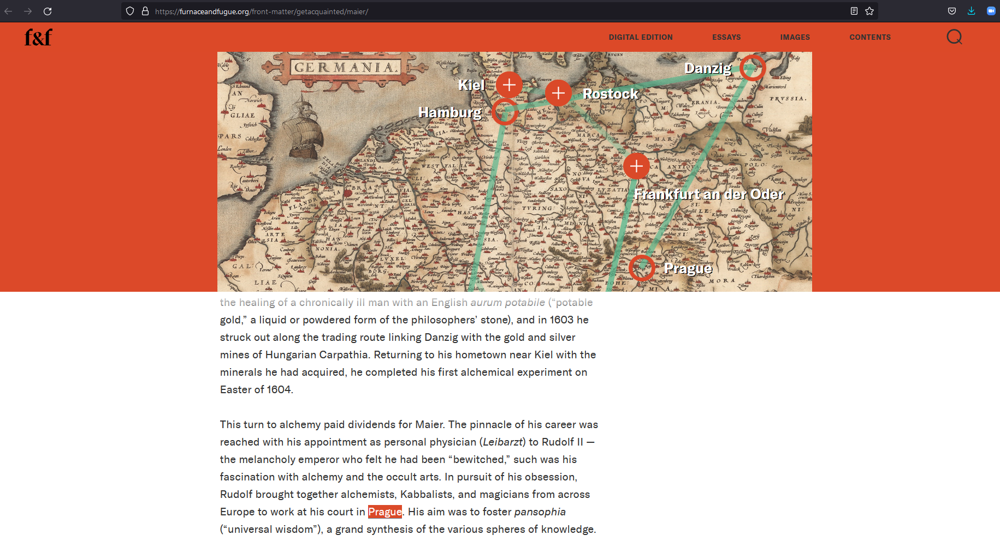
Potential future work for Furnace and Fugue includes integrating the image search with Emblematica Online or similar sources. This would entail tagging the images according to the IconClass guidelines for easier comparison of potential visual inspirations. The text could benefit from a philological approach and a text-critical edition, providing explanations of visual motifs and sources directly on the text in the form of a traditional commentary. Having to retrieve and reassemble the information scattered throughout scholarly essays makes it hard to form one’s own interpretation of the text. Additionally, integrating the sources identified by De Jong or providing an easily searchable overview of De Jong’s findings would be valuable (Jong 2002, 330-33), maybe even linking to the sources of relevant facsimiles available online. Further research could explore the chemical interpretations of Atalanta fugiens, as done in Werthmann.44 Many publications suggest that this topic is already dealt with yet there are hardly any publications explaining why this supposedly is so.
While Furnace and Fugue has a beautifully designed layout and a collaboration with a traditional publishing house, it could enhance the user experience by providing more transparent information about its sources, such as the 17th century English translation, and improving the accessibility of footnotes in scholarly essays. While the resource offers diplomatic and normalised transcriptions of the Latin-German original book and its 17th century English translation, textual scholars may desire a critical apparatus or commentary at the word or sentence level. The scholarly essays provide interpretations but do not constitute a philological or text-critical edition as implied by the project title.
Additionally, the long-term archiving situation and data management plan require clarification. The insights gained from the project should be published in a Digital Humanities publication to make them accessible to the wider community and ensure preservation for the future, involving both the editors as well as the technical leads of the project. Such a publication could summarise some of the information which can now be found by listening to a number of podcasts on the project but also explain decisions made in the process of creating this publication in more detail, especially with regards to experimenting with ways to handle the multimediality of the sources, potential reuse scenarios (and a long-term archiving plan) for the data and libraries created for the project. Furthermore, it would be great to have a deeper description of the digital aspects of the project which goes beyond the brief project description (backmatter/about). Overall, Furnace and Fugue is a stunning project that provides a valuable platform for both the general public and scholars to explore Atalanta fugiens.
Conclusion
Furnace and Fugue is the first born-digital monograph by Brown University Digital Publications, consisting of eight interpretative essays, three introductory texts, and a digital edition of the early modern emblem book Atalanta fugiens (1618a), including a MEI-based music player, using which individual voices can be isolated for analysis and demonstration, an invaluable feature for lectures or educational presentations. The edition shines in its elegant visual presentation and interactive capabilities. For instance, the feature to create personalised emblem collections is significant, allowing focused, individualised study. Additionally, the image search functionality lets users dive deeply into the material, even if it could benefit from integration into existing emblem databases and search engines to facilitate even broader comparative studies. Particularly noteworthy is the innovative MEI Viewer/Player, which opens new vistas for understanding Maier’s intricate fusion of music with alchemical thought, allowing even those without a music theory background to engage deeply with the fugues. The feature not only empowers academic scrutiny but also extends the project’s appeal to a broader audience.
A flagship project and ‘haute couture’ digital edition, Furnace and Fugue pushes the boundaries of multimedia publication in the historiography of alchemy. Nummedal and Bilak have seamlessly blended the realms of digital scholarly edition and digital scholarly publication, with the edition being accompanied by essays from various disciplines. In the context of alchemy research, where digital scholarly editions are still relatively few, Furnace and Fugue is an innovative project, taking its place alongside the only two other major digital editions, the 2009 pioneering Chymistry of Isaac Newton project (Newman 2009) and the influential Making and Knowing project (2014-2021, Smith 2020). The comprehensive and interactive digital platform realises the multimedia experience likely envisioned by Maier for Atalanta fugiens, a feature hitherto inaccessible to most users of the book. In sum, Furnace and Fugue enriches scholarship on early modern alchemy and on the chymist Michael Maier. It sets a precedent in its multidisciplinary approach and multimedia digital edition. It represents a significant leap forward in understanding Maier’s multimedia vision and its implications for his alchemical thought.
Bibliography
- Bianchi, Eric. 2020. “Weight, Number, Measure: The Musical Universe of Michael Maier.” Furnace and Fugue. In A Digital Edition of Michael Maier’s ‘Atalanta fugiens’ (1618) with Scholarly Commentary, edited by Tara Nummedal and Donna Bilak. https://furnaceandfugue.org/essays/bianchi/.
- Bielak, Alicja. 2021. “A Review of Furnace and Fugue, a Digital Edition of Michael Maier’s Atalantia Fugiens, directed by Allison Levy.” In Reviews in Digital Humanities 2/12. https://doi.org/10.21428/3e88f64f.6f3a23ff.
- Bilak, Donna. 2020. “Chasing Atalanta. Maier, Steganography, and the Secrets of Nature.” In Furnace and Fugue. A Digital Edition of Michael Maier’s ‘Atalanta fugiens’ (1618) with Scholarly Commentary, edited by Tara Nummedal and Donna Bilak. https://furnaceandfugue.org/essays/bilak/.
- Cocks, Catherine. 2021. “Going Digital: Considerations and Collaborations Interview.” In The H-Net Book Channel. https://networks.h-net.org/node/1883/discussions/8596862/going-digital-considerations-and-collaborations.
- Eijkelboom, Carolien. 1990. “Alchemical Music by Michael Maier.” In Alchemy Revisited: Proceedings of the International Conference on the History of Alchemy at the University of Groningen, 17–19 April 1989, edited by Z. R. W. M. von Martels, 98. Leiden: Brill.
- Figala, Karin, and Ulrich Neumann. 1989. “Michael Maier (1569–1622): New Bio-Bibliographical Material.” In Alchemy Revisited. Proceedings of the International Conference on the History of Alchemy at the University of Groningen. 17–19 April 1989, edited by Z. R. W. M. von Martels, 34-50. Collection de Travaux de L’Académie Internationale d’histoire Des Sciences 33. John d. North (Ed.). Leiden: Brill.
- Forshaw, Peter J. 2020. “Michael Maier and Mythoalchemy.” In Furnace and Fugue. A Digital Edition of Michael Maier’s ‘Atalanta fugiens’ (1618) with Scholarly Commentary, edited by Tara Nummedal and Donna Bilak. https://furnaceandfugue.org/essays/forshaw/.
- Frietsch, Ute. 2017. “Bilder.” Herzog August Bibliothek Wolfenbüttel. http://alchemie.hab.de/bilder.
- Frietsch, Ute. 2021. “Obscurum vocabulum: Begriffe der frühneuzeitlichen Alchemie und der Alchemie-Thesaurus der Herzog August Bibliothek.” In Alchemie – Genealogie und Terminologie, Bilder, Techniken und Artefakte. Forschungen aus der Herzog August Bibliothek, edited by Petra Feuerstein-Herz and Ute Frietsch. Wiesbaden: Harrassowitz, 103-131.
- Gaudio, Michael. 2020. “The Emblem in the Landscape. Matthäus Merian’s Etchings for Atalanta Fugiens.” In Furnace and Fugue. A Digital Edition of Michael Maier’s ‘Atalanta fugiens’ (1618) with Scholarly Commentary, edited by Tara Nummedal and Donna Bilak. https://furnaceandfugue.org/essays/gaudio/.
- Godwin, Jocelyn. ed. 1989. Atalanta Fugiens: An Edition of the Fugues, Emblems and Epigrams, by Michael Maier, Translated by Jocelyn Godwin. Grand Rapids, MI: Phanes Press.
- Hasler, Johann F. W. 2011. “Performative and Multimedia Aspects of Late-Renaissance Meditative Alchemy: The Case of Michael Maier’s Atalanta Fugiens (1617).” In Revista de Estudios Sociales 39: 135-44.
- Hlaváček, Jakub. 2006. “K Alchymistické Interpretaci Antické Mytologie on the Alchemistic Interpretation of Ancient Mythology.” In Maier, Michael, Atalanta Fugiens. Prchající Atalanta Neboli Nové Chymické Emblémy Vyjadřující Tajemství Přírody, 11-33. Prague.
- Hofmeier, Thomas. 2007. “Einleitung.” In Michael Maiers Chymisches Cabinet: Atalanta Fugiens deutsch nach der Ausgabe von 1708, edited by Thomas Hofmeier, 9-72. Berlin, Basel: Thurneysser.
- Jong, Helena de. 2002. Michael Maiers’s Atalanta Fugiens. Sources of an Alchemical Book of Emblems. Lake Worth: Nicolas-Hays, Inc. Reprint of the original 1969 edition: Leiden: Brill. Ianus 7.
- Kelkel, Manfred. 1987. “A la recherche d’un art total: Musique et alchimie chez Michael Maier: Maniérismes et discours hermétique dans Atalanta Fugiens (1617).” In Analyse Musicale: La Musique et Nous 8: 49-55.
- Leibenguth, Erik. 2002. Hermetische Philosophie des Frühbarock. Die “Cantilenae Intellectuales” Michael Maiers. Edition mit Übersetzung, Kommentar und Bio-Bibliographie. Tübingen: Niemeyer.
- Limbeck, Sven. 2019. “‘Sounding Alchemy’. Alchemie und Musik in Mittelalter und Früher Neuzeit.” In Feurige Philosophie: Zur Rezeption Der Alchemie (Wolfenbütteler Hefte, Band 37), edited by Petra Feuerstein-Herz, 43-82. Wolfenbüttel: Harrassowitz.
- Ludwig, Loren. 2020. “John Farmer’s Sundry Waies. The English Origin of Michael Maier’s ‘Alchemical Fugues’.” In Furnace and Fugue. A Digital Edition of Michael Maier’s Atalanta fugiens (1618) with Scholarly Commentary, edited by Tara Nummedal and Donna Bilak. https://furnaceandfugue.org/essays/ludwig/.
- Maier, Michael. 1617a. “Examen Fucorum Pseudo-Chymicorum.” Herzog August Bibliothek Wolfenbüttel. 1617. http://diglib.hab.de/drucke/46-med-4s/start.htm.
- Maier, Michael. 1617b. “Symbola Aureae Mensae.” Herzog August Bibliothek Wolfenbüttel. 1617. http://diglib.hab.de/drucke/46-med-1s/start.htm.
- Maier, Michael. 1618a. Atalanta fugiens: hoc est, emblemata nova de secretis naturæ, chymica, accomodata partim oculis & intellectui, figuris cupro incisi, adiectisque sententiis, epigrammatis & notis, partim auribus & recreationi animi plus minus 50 rugis musicalibus trium vocum. Brown Olio. Brown Digital Repository. Brown University Library. https://repository.library.brown.edu/studio/item/bdr:698524/.
- Maier, Michael. 1618b. Tripus Aureus, Hoc est, Tres Tractatus Chymici Selectissimi : Nempe I. Basilii Valentini ... Practica una cum 12. clavibus... II. Thomae Nortoni ... Crede Mihi seu Ordinale... nunc ex Anglicano manuscripto in Latinum translatum ... III. Cremeri Cuiusdam Abbatis Westmonasteriensis Angli Testamentum. Jennis: Frankfurt am Main.
- Maier, Michael. 2009. “Arcana Arcanissima (Digital edition of the 1613 edition): Ann Arbor, MI; Oxford (UK): Text Creation Partnership, 2008-09 (EEBO-TCP phase 1).”, http://name.umdl.umich.edu/A06751.0001.001.
- Martinón-Torres, Marcos. 2011. “Some Recent Developments in the Historiography of Alchemy.” In Ambix 58/3: 215-37.
- McLean, Adam, ed. 2005. The Viatorium of Michael Maier. A 17th Century English Manuscript Translation Transcribed by Fiona Oliver and Voicu Ion Cristi. Glasgow: Magnum Opus Hermetic Sourceworks No. 29.
- Meinel, Christoph. 1986. “Alchemie und Musik.” In Die Alchemie in der Europäischen Kultur- und Wissenschaftsgeschichte, edited by Christoph Meinel, 201-25. Harrassowitz: Wiesbaden.
- Mundt, Lothar. 1992. “Empfehlungen zur Edition neulateinischer Texte.” In Probleme der Edition von Texten der Frühen Neuzeit. Beiträge zur Arbeitstagung der Kommission für die Edition von Texten der Frühen Neuzeit, edited by Lothar Mundt, Hans-Gert Roloff, and Ulrich Seelbach, 186-90. Editio / Beihefte 3. Tübingen: Max Niemeyer. https://doi.org/10.1515/9783110946932.186.
- New Books Network. 2020. “D. Bilak and T. Nummedal, ‘Furnace and Fugue. A Digital Edition of Michael Maier’s ‘Atalanta Fugiens’ (1618) (U Virginia Press, 2020).” Podcast “New Books in German Studies” 2020-10-08. https://podcasts.apple.com/ie/podcast/d-bilak-t-nummedal-furnace-fugue-digital-edition-michael/id671875824?i=1000495509588.
- Newman, William (ed.). 2009. The Chymistry of Isaac Newton. Bloomington: Indiana University. https://webapp1.dlib.indiana.edu/newton/indexChemicus.do.
- Norman, Donald. 2013. The Design of Everyday Things: Revised and Expanded Edition. MIT Press.
- Nummedal, Tara. 2020. “Sound and Vision. The Alchemical Epistemology of Michael Maier’s Atalanta Fugiens.” In Furnace and Fugue. A Digital Edition of Michael Maier’s ‘Atalanta fugiens’ (1618) with Scholarly Commentary, edited by Tara Nummedal and Donna Bilak. https://furnaceandfugue.org/essays/nummedal/.
- Nummedal, Tara, and Donna Bilak. 2016. “Tear the Books Apart: Atalanta Fugiens in a Digital Age.” https://blogs.brown.edu/libnews/nummedal-bilak/.
- Nummedal, Tara, and Donna Bilak. eds. 2020a. Furnace and Fugue. A Digital Edition of Michael Maier’s ‘Atalanta Fugiens’ (1618) with Scholarly Commentary. https://furnaceandfugue.org/.
- Nummedal, Tara, and Donna Bilak. 2020b. “Interplay. New Scholarship on Atalanta fugiens” In Furnace and Fugue. A Digital Edition of Michael Maier’s ‘Atalanta fugiens’ (1618) with Scholarly Commentary, edited by Tara Nummedal and Donna Bilak. https://furnaceandfugue.org/essays/introduction/.
- Oosterhoff, Richard J. 2020. “Learned Failure and the Untutored Mind. Emblem 21 of Atalanta Fugiens.” In Furnace and Fugue. A Digital Edition of Michael Maier’s ‘Atalanta fugiens’ (1618) with Scholarly Commentary, edited by Tara Nummedal and Donna Bilak. https://furnaceandfugue.org/essays/oosterhoff/.
- Perrot, Étienne. 1982. Les trois pommes d’or. Commentaire sur l’Atalante fugitive de Michel Maier. Paris: La Fontaine de Pierre.
- Pierazzo, Elena. 2019. “What Future for Digital Scholarly Editions? From Haute Couture to Prêt-à-Porter.” In International Journal of Digital Humanities 1(4): 209-20. https://doi.org/10.1007/s42803-019-00019-3.
- Principe, Lawrence M. 2013. The Secrets of Alchemy. Chicago.
- Purš, Ivo. 2007. “Emblémy Prchající Atalanty Michaela Maiera Emblems of Fleeing Atalanta by Michael Maier.” In Logos 1/2: 97-106.
- Raasveld, Paul P. 1994. “Michael Maiers Atalanta Fugiens (1617) und das Kompositionsmodell in Johannes Lippius’s Sunopsis Musicae Novae (1612).” In From Ciconia to Sweelinck: Donum Natalicium Willem Elders, edited by Albert Clement and Eric Jas, 355-68. Amsterdam: Rodopi.
- Rampling, Jennifer. 2020. “Early Modern Alchemy.” In Furnace and Fugue: A Digital Edition of Michael Maier’s ‘Atalanta fugiens’ (1618) with Scholarly Commentary, edited by Tara Nummedal and Donna Bilak. https://furnaceandfugue.org/front-matter/getacquainted/alchemy/.
- Rashleigh, Patrick, and Crystal Brusch. 2020. “Multimedia from the 17th-Century Book to the 21st-Century Web: A Playable Digital Edition of Michael Maier’s ‘Atalanta Fugiens’.” In Proceedings of the Music Encoding Conference 2020, edited by Elsa De Luca. Boston: Humanities Commons. http://dx.doi.org/10.17613/ggym-sc21.
- Rebotier, Jacques. 1972. “L’art de musique chez Michel Maier.” In Revue de L’histoire Des Religions 182/1: 29-51.
- Rola, Stanislas Klossowski De. 1988. The Golden Game: Alchemical Engravings of the Seventeenth Century. London: Thames & Hudson.
- Sahle, Patrick. 2016. “What Is a Scholarly Digital Edition?” In Digital Scholarly Editing. Theories and Practices, edited by Matthew James Driscoll and Elena Pierazzo, 19-39. Cambridge: Open Book Publishers. https://books.openedition.org/obp/3397.
- Sawyer, F. H. 1966. “The Music in ‘Atalanta Fugiens’.” In Prelude to Chemistry: An Outline of Alchemy, Its Literature and Relationships, edited by John Read, 281-89. Cambridge: MIT Press.
- Sleeper, Helen Joy. 1938. “The Alchemical Fugues in Count Michael Maier’s ‘Atalanta Fugiens’.” In Journal of Chemical Education 15/9: 410. https://doi.org/10.1021/ed015p410.
- Smith, Pamela. 2020. The Making and Knowing Project (2015–2020). https://www.makingandknowing.org.
- Smith, Pamela H. 2009. “Rez: Thomas Hofmeier, Michael Maiers Chymisches Cabinet. Atalanta Fugiens Deutsch nach der Ausgabe von 1708, Berlin and Basel, Thurneysser, 2007” In Medical History 53:1: 141-42. https://doi.org/10.1017/S0025727300003434.
- Streich, Hildemarie. 1989. “Introduction: Music, Alchemy and Psychology in Atalanta Fugiens of Michael Maier.” In Atalanta Fugiens: An Edition of the Fugues, Emblems and Epigrams, by Michael Maier, Translated by Jocelyn Godwin, edited by Jocelyn Godwin, 19-89. Grand Rapids, MI: Phanes Press.
- Szönyi, György Endre. 2003. “Occult Semiotics and Iconology: Michael Maier’s Alchemical Emblems.” In Mundus Emblematicus. Studies in Neo-Latin Emblem Books, edited by Karl. A. E. Enenkel and Arnoud S. Q. Visser, 301-23. Imago Figurata Studies 4. Turnhout: Brepols.
- Tabor, Stephen. 2020. “Atalanta Fugiens in the Printing Office.” In Furnace and Fugue. A Digital Edition of Michael Maier’s ‘Atalanta fugiens’ (1618) with Scholarly Commentary, edited by Tara Nummedal and Donna Bilak. https://furnaceandfugue.org/front-matter/getacquainted/printing/.
- Tilton, Hereward. 2011. “Rez: Thomas Hofmeier, Michael Maiers Chymisches Cabinet. Atalanta Fugiens Deutsch nach der Ausgabe von 1708.” In Ambix 58:1: 85-86.
- Tilton, Hereward. 2020. “Michael Maier: An Itinerant Alchemist in Late Renaissance Germany.” In Furnace and Fugue. A Digital Edition of Michael Maier’s Atalanta fugiens (1618) with Scholarly Commentary, edited by Tara Nummedal and Donna Bilak. https://furnaceandfugue.org/front-matter/getacquainted/maier/.
- Wagner, Berit. 2021. Merian und die Bebilderung der Alchemie um 1600. https://merian-alchemie.ub.uni-frankfurt.de/.
- Wels, Volkhard. 2010. “Poetischer Hermetismus. Michael Maiers Atalanta Fugiens (1617/18).” In Konzepte des Hermetismus in der Literatur der Frühen Neuzeit, edited by Peter-André Alt and Volkhard Wels, 149-94. Berliner Mittelalter- Und Frühneuzeitforschung, Band 8. Göttingen: V & R Unipress.
- Werthmann, Rainer. 2011. “Kap. 13: Die Erlebnisqualität chemischer Reaktionen.” In Johann Rudolph Glauber. Alchemistische Denkweise, Neue Forschungsergebnisse und Spuren in Kitzingen, edited by Stephanie Nomayo, 213-28. Schriftenreihe des Städtischen Museums Kitzingen, Band 4. Kitzingen am Main.
Notes
- Almost all research articles on Atalanta fugiens repeat the same information describing how the book is set up, so this information can easily be gathered from those sources. ↑
- The reviewer’s academic background is in Classics (Neo-Latin), history of science (esp. alchemy) as well as the Digital Humanities. Having written a PhD thesis on a use case for digital methods on the work of Michael Maier, I have a background in relevant aspects of the project under review (digital editing, history of alchemy, and Neo-Latin) and am deeply familiar with the research tradition. ↑
- Examples are: Maier 1617a, 1617b, 2009. ↑
- The 2009 Newton digital edition is currently being updated but beyond a number of tweets, no definitive information with more details has yet been published about it: https://twitter.com/alextheknitter/status/12555713769934397452020-04-29). ↑
- https://dbilakpraxis.com/project-atalanta/ further testify the creation process of Furnace and Fugue, such as: Nummedal and Bilak 2016. ↑
- https://www.youtube.com/watch?v=pa2xtPmXBvc (“Furnace and Fugue Launch – August 25, 2020”, University of Virginia Press YouTube Channel). ↑
- Those contributors are listed in the backmatter/about page where acknowledgements also declare more informal contributions by a list of other individuals. The TEI data contains metadata making responsibilities explicit, however in other parts of the website, the declaration of individual responsibilities, especially on the Digital Humanities side of the project, remains somewhat vague. However, the ‘Credits’ section in the backmatter of the website gives a good overview of individual responsibilities. ↑
- instagram.com/furnaceandfugue ↑
- https://library.brown.edu/create/libnews/rosenzweig-prize/. ↑
- De Jong provided an overview of the sources for the mottos in Maier’s emblems in Jong 2002, 330-33. ↑
- As Principe argues: “Although the original sources of the imagery lie in earlier texts, Maier augments them with further connections, allusions, and meanings of his own. The epigrams are so intricate that it seems unlikely that any one reader would ever ‘get’ all the references, allusions, connections, and puns.” In: Principe 2013, 174. ↑
- Figala and Neumann write: “In general, Maier pursued the aim in his published books of raising and maintaining alchemy in the opinion of the educated public. He strove expressly to give it the rank in the contemporary hierarchy of sciences that he thought it deserved. It should stand, as the noblest of the scholarly disciplines, directly after theology, for its subject-matter is the investigation of the greatest secrets of God’s creation. [...] A way the poeta laureatus Maier found to bring Chymia nearer to the educated public was by glorifying it in poetry. With this purpose he wrote not only three Latin poetic cycles, but also his best-known work and certainly one of the most beautiful books of alchemical literature of all time, the Atalanta fugiens, first printed in 1617.” In: Figala and Neumann 1989, 49-50. Also, Principe: “In contrast to Basil Valentine’s organised sequence of ‘keys’ that expound a single text and encode a single process, Maier’s Atalanta fugiens is a florilegium of images. It collects imagery and expressions from an array of earlier authors – Hermes, Morienus, Valentine, and others – and assembles them into one of the most intricate and rich layerings of meaning to be found in chymistry. Even though Maier probably did perform some laboratory work, his Atalanta fugiens lies much further from the world of laboratory practice than do the books of Valentine or George Starkey. (Some readers, including Sir Isaac Newton, nevertheless mined it for practical information about making the Philosophers’ Stone.)” In: Principe 2013, 174. ↑
- Figala and Neumann conclude: “It has been said that this book contains ‘no instructions at all for alchemical practice’. This is certainly true, and much the same might be said about all Maier’s published works.” In: Figala and Neumann 1989, 50. See also Principe 2013, 174-79. ↑
- Werthmann 2011, 214-26 covers emblems 24, 28, 34, 37, and 44. Another article by Rainer Werthmann on chemical interpretations of Atalanta fugiens will appear in the proceedings Michael Maier und die Formen (al)chemischen Wissens um 1600 (Volkhard Wels & Simon Brandl, eds.) titled Chemisches Wissen in Michael Maiers Atalanta fugiens. ↑
- On the general topic see: Principe 2013, 174-79. ↑
- On Atalanta fugiens (choice): Jong 2002; Szönyi 2003; Hlaváček 2006; Hofmeier 2007; Purš 2007; Wels 2010; Nummedal and Bilak 2020a, 2020b. ↑
- For example: Sleeper 1938; Sawyer 1966; Rebotier 1972; Meinel 1986; Kelkel 1987; Streich 1989; Godwin 1989; Eijkelboom 1990; Raasveld 1994; Hasler 2011; Limbeck 2019. ↑
- From a historiographical standpoint, one may question the editors’ decision to re-edit Maier’s most well-famous work when there would have been a large number of less well researched works of Maier’s left that might have benefited more from in-depth study. Especially as it seems likely that better knowledge of those works would be critical for the interpretation of Atalanta fugiens, which – due to its highly unusual nature – remains challenging to contextualise without deeper knowledge of Maier’s other works. ↑
- The bibliographic citation of the edition is: Nummedal and Bilak 2020a. ↑
- Nummedal and Bilak 2020a: https://furnaceandfugue.org/atalanta-fugiens/. ↑
- Clicking ‘Begin Atalanta fugiens’ on the contents overview (https://furnaceandfugue.org/search/) does lead to the title page but traditional ‘leafing through’ still is possible only through the unfolded emblem navigation. ↑
- The digital edition is based on this facsimile: https://repository.library.brown.edu/studio/item/bdr:698524/ = Maier 1618a. The Music Encoding Initiative (MEI) is an XML standard for encoding musical documents. More information on the MEI Viewer will be given below. ↑
- It looks like this: https://furnaceandfugue.org/atalanta-fugiens/emblem18.html. ↑
- Which looks something like this for a collection named ‘test’ containing the emblems 12, 13, and 14: https://furnaceandfugue.org/atalanta-fugiens/emblem18.html#collection_name=test&emblems=12,13,14. Thus, they are not actually saved but rather, when a user creates a collection, it really is just a custom URL which contains a name and the numbers of the emblems which are part of the custom collection. ↑
- https://furnaceandfugue.org/search/image-search.html. ↑
- The emblem tags appear to have been assigned within the project. I was able to trace them back to a JSON file being processed in JavaScript code, but they do not seem to be included in TEI/XML and also do not correspond to IconClass or similar standards. This seems like an interesting, yet underdeveloped feature. The tags become visible when one clicks on ‘Tags’ under the ‘Images’ section of the website. They then expand to reveal keywords with hyperlinks, and clicking on one of the tags displays all images tagged with that particular keyword. Essentially, the emblem image tags serve as a semantic image search. To effectively use this feature, one would need to initially discern which terms can be entered, meaning the functionality, while innovative, may go undiscovered except by happenstance or not at all with cursory engagement. ↑
- Frietsch 2017, discussed in Frietsch 2021, 117. IconClass tags for alchemy: https://iconclass.org/en/49E39. ↑
- A list of editions and translations, both modern and historical, can be found in Leibenguth 2002, 497-502. The translation from Mellon MS 48 seems to have been created soon after the publication of Atalanta fugiens in 1617/18, as the watermarks indicate the year 1625. The manuscript may have been intended as a draft for an English edition, as indicated by corrections from an editor (Leibenguth 2002, 498). Sloane Ms. 3645 from the British Library contains another English translation titled The flying Atalanta. An alchemical treatise dated in the late 1670s. There are at least two French translations, a 17th century exemplar at the Getty Research Institute, Box 27, as well as an 18th century exemplar at Muséum d’histoire naturelle (Paris), Ms. 360. A shortened version of Atalanta fugiens was published under the title Scrutinium Chymicum in 1687. Furthermore, a 1708 edition called Chymisches Cabinet is the basis for Hofmeier 2007 (with detailed indices). Jong 2002 also features an English translation with commentary. Perrot 1982 contains a French translation and commentary. The fact that so many translations and resources on Atalanta fugiens already existed may indicate a missed opportunity to consolidate this material into one comprehensive edition in Furnace and Fugue. ↑
- Due to the choice of providing only historical translations, there is, for example, no German view of the preface. In the other cases where the ‘Diplomatic German’ version can be selected, only the ‘Epigram’ is in German whereas the ‘Discourse’ remains in Latin, hinting at the fact that ‘Diplomatic German’ means ‘diplomatic transcription of the German edition’ (which happens to be bilingual) and does not necessarily describe the language of the text itself. This is one of the other confusions caused by not having included explanations on the translation in the edition view itself. ↑
- The recommendations for editing early modern texts emphasise the importance of carefully contextualising historical translations as independent historical sources. While reusing historical translations may appear as a convenient shortcut, it can be misleading. Editing historical translations requires substantial effort when done correctly. The Neo-Latin community is divided on whether to use historical translations at all, as their benefits may not outweigh the potential challenges they present (Mundt 1992). After all, interpreting and translating alchemical texts is and has always been a significant exegetical endeavour, not only due to their specialist terms and ‘Decknamen’ but also because certain words are generally hard to render in other languages without a partial loss in meaning. Furthermore, the translator might not have understood the original Latin or Maier’s intended alchemical message, for all we know. For instance, in the Viatorium translation (McLean 2005) it is evident that the translator uses formulations that obscure the meaning further when seemingly they did not understand what Maier was talking about. However, instead of acknowledging this uncertainty, as a modern editor would be expected to do, historical editors often glossed over such issues. Therefore, the true benefit of reusing a historical translation is questionable, and only individuals with sufficient Latin skills to read Maier’s original text would be in a position to notice such issues. This makes historical translations particularly unsuitable for lay audiences, who would benefit the most from having a reliable translation available. ↑
- https://furnaceandfugue.org/back-matter/about/. There is no further information on why the authors think it to be a reliable translation. Was this verified on a number of emblems or is there secondary literature to back this claim up? Is there any reliable information on the production context and intended use of Mellon MS 48? The English translation is based on the 17th century translation Atalanta running, that is, new chymicall emblems relating to the secrets of nature. Mellon MS 48. Beinecke Rare Book and Manuscript Library. https://collections.library.yale.edu/catalog/15959780 (completely digitised). ↑
- In this review, the title of Maier’s book is misspelt as Atalantia instead of Atalanta. ↑
- The music edition can be found under this: https://furnaceandfugue.org/back-matter/music-performance/furnace-fugue-music-edition.pdf. The performance edition is a PDF version of Atalanta fugiens intended for singers who want to print out the sheet music for performing it. ↑
- Another edition with commentary is currently being prepared in the context of Sonderforschungsbereich 980 Episteme in Bewegung. Wissenstransfer von der alten Welt bis in die Frühe Neuzeit as a sub-project under the title of Michael Maiers Atalanta fugiens – Emblematische Verrätselung als Transferstrategie by Simon Brandl at FU Berlin. https://www.sfb-episteme.de/teilprojekte/sagen/A06/up_brandl/index.html. ↑
- https://doi.org/10.26300/bdp.ff.maier to be found here: https://furnaceandfugue.org/atalanta-fugiens/. ↑
- According to email correspondence with editor Tara Nummedal and project designer Crystal Brusch, long-term preservation is planned as part of the Brown Digital Repository (BDR): https://repository.library.brown.edu/studio/. Even though the project has already ended three years ago at this point, there does not seem to be a permanent solution yet. This issue seems to be beyond the editors’ control and one can only hope that there will be an institution-wide solution for archiving born-digital projects in the future. ↑
- https://github.com/Brown-University-Library/atalanta-media, https://github.com/Brown-University-Library/atalanta-code, https://github.com/Brown-University-Library/atalanta, https://github.com/Brown-University-Library/atalanta-src (containing the custom static site generator). The latter is not a public repository. ↑
- Maier 1618a = https://repository.library.brown.edu/studio/item/bdr:698524/ ↑
- https://github.com/Brown-University-Library/atalanta-media. ↑
- An example is: https://github.com/Brown-University-Library/atalanta-texts/blob/master/latin/EpigrammaAuthoris.xml. However, it is not quite clear where the image tags in the tag view come from or whether they even are from IconClass. One would assume there must be a METS document in the background, yet this does not seem to be part of the GitHub repository. Only a JSON file is to be found which likely is responsible for the semantic search: https://github.com/Brown-University-Library/atalanta-code/blob/master/data/json/byterm_enh_array.json. ↑
- It is worth discussing briefly why this may present problems. Does a digital edition only hold value if it receives approval from a traditional press? Does this impose further restrictions on scholars engaged in scholarly editing? The involvement of a tenured professor at Brown University, along with the support of the Mellon Foundation and Brown Digital Publishing Initiative, highlights the privilege associated with such projects. Does this potentially set a precedent for other scholars interested in publishing digitally, requiring them to collaborate with prestigious presses, a practice rather uncommon in the world of digital scholarly editing? Does this implicitly suggest that a digital edition itself is not a reputable or serious publication? In fact, the digital scholarly editing community offers various quality assurance measures, both ‘extrinsic’ (such as this journal or the Reviews in DH journal), and ‘intrinsic’ by adhering to best practices in digital scholarly editing. These measures are intended to ensure quality assurance and prevent digital editions from being perceived as inferior to traditional print editions.Such concerns may have been understandable at a time when digital scholarly editing was less prevalent and online sources still carried a stench of untrustworthiness. However, one would expect that in 2020, a year where the necessity of ‘going digital’ became even more evident in academia, even in previously less digital spaces due to the global pandemic, this would no longer be a topic of discussion. As a member of the Digital Humanities community, one would assume that a digital edition is not viewed as inferior, even in the initial years of the project (2015/7). If anything, participating in or leading a digital project should be considered an asset for one’s Curriculum Vitae, as indicated in the podcasts where the editors discuss the motivation behind Furnace and Fugue (New Books Network 2020, Cocks 2021). Then again, this might serve to put into relief the contrast which still exists between the Digital Humanities and more traditionally-minded scholars with regards to digital scholarly editing. Admittedly, these statements were only made in more informal outlets such as interviews or podcasts, not reflected in the narrative on the website itself. However, it remains crucial to pay close attention to the rhetoric employed in digital edition projects, particularly those claiming to serve as flagship examples for inspiring future best practices. ↑
- Historians of chemistry, such as Lawrence Principe, seem to have acted as consultants at some stage of the project or at least participated in the 2015 and 2016 workshops. This criticism may have been anticipated and thus addressed with an explanation as to why the decision was made to not include such a central aspect. ↑
- On criteria for classifying resources as digital scholarly editions: Sahle 2016. ↑
- Werthmann 2011, 214-26 covers emblems 24, 28, 34, 37, and 44. ↑
@article{furnace-fugue,
author = {Lang, Sarah},
title = {Furnace and Fugue. A multimedia edition of Michael Maier’s Atalanta
fugiens},
journal = {RIDE – A review journal for digital editions and resources},
number = {18},
year = {2023},
doi = {10.18716/ride.a.18.4},
url = {https://doi.org/10.18716/ride.a.18.4},
}TY - JOUR
AU - Lang, Sarah
TI - Furnace and Fugue. A multimedia edition of Michael Maier’s Atalanta
fugiens
T2 - RIDE – A review journal for digital editions and resources
IS - 18
PY - 2023
DA - 2023/12
DO - 10.18716/ride.a.18.4
UR - https://doi.org/10.18716/ride.a.18.4
PB - Institut für Dokumentologie und Editorik e.V.
LA - en
ER - Lang, S. (2023). Furnace and Fugue. A multimedia edition of Michael Maier’s Atalanta
fugiens. RIDE – A review journal for digital editions and resources, (18). https://doi.org/10.18716/ride.a.18.4Lang, Sarah. "Furnace and Fugue. A multimedia edition of Michael Maier’s Atalanta
fugiens." RIDE – A review journal for digital editions and resources, no. 18, 2023. https://doi.org/10.18716/ride.a.18.4.Lang, Sarah. "Furnace and Fugue. A multimedia edition of Michael Maier’s Atalanta
fugiens." RIDE – A review journal for digital editions and resources, no. 18 (2023). https://doi.org/10.18716/ride.a.18.4.